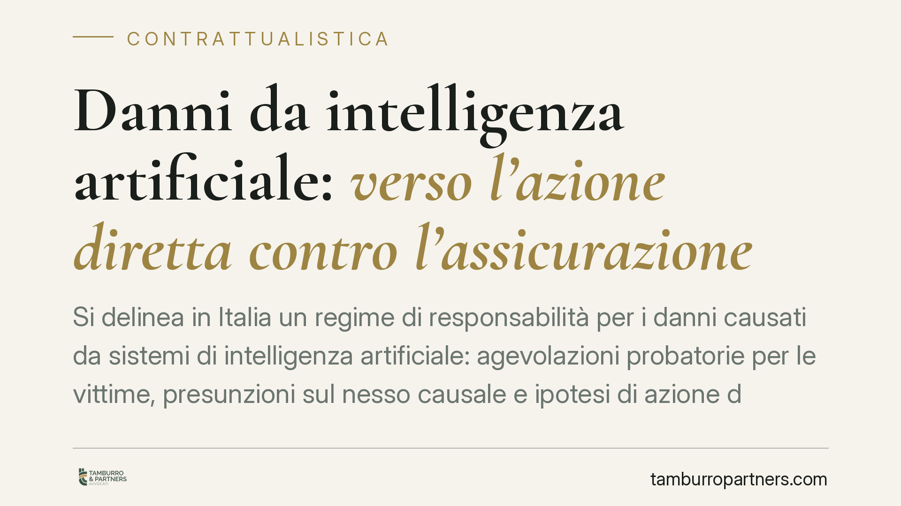

Danni da intelligenza artificiale: verso l'azione diretta contro l'assicurazione
Si delinea in Italia un regime di responsabilità per i danni causati da sistemi di intelligenza artificiale: agevolazioni probatorie per le vittime, presunzioni sul nesso causale e ipotesi di azione diretta verso l'assicuratore. I riferimenti normativi citati dalle fonti divulgative vanno però verificati in Gazzetta Ufficiale. Restano nodi rilevanti sui sistemi pienamente autonomi e sul versante penale.

Il quadro in evoluzione
Negli ultimi mesi le fonti divulgative segnalano l'arrivo di una disciplina nazionale dedicata alla responsabilità civile per i danni prodotti da sistemi di intelligenza artificiale. Si parla di un decreto legislativo attuativo che introdurrebbe agevolazioni probatorie a favore delle vittime, una presunzione relativa sul nesso causale, un'azione diretta contro la compagnia assicurativa e l'applicazione del foro del consumatore.
> Nota redazionale — riferimenti da verificare. Il D.lgs. n. 160/2026, gli artt. 16-20, la legge delega n. 132/2025 e la data di entrata in vigore del 30 settembre 2026 circolano nelle sintesi giornalistiche ma, alla data di redazione, devono essere riscontrati nel testo pubblicato in Gazzetta Ufficiale. Fino a quel momento le indicazioni che seguono vanno lette al condizionale. Su un tema in cui i numeri di decreto e di articolo cambiano la portata dell'obbligo, pubblicare come certo ciò che non lo è sarebbe scorretto.
Inquadramento normativo
Occorre distinguere due piani che spesso vengono confusi.
Il Regolamento UE 2024/1689 (AI Act) disciplina i requisiti dei sistemi di intelligenza artificiale secondo un approccio basato sul rischio (obblighi crescenti per i sistemi ad alto rischio, valutazioni di conformità, trasparenza). L'AI Act non regola la responsabilità risarcitoria: non stabilisce chi paga il danno né come si prova la colpa. Quel profilo era oggetto di una proposta europea separata (la cosiddetta *AI Liability Directive*), rimasta in stallo. Presentare l'AI Act come fonte del regime risarcitorio è quindi un errore ricorrente da evitare.
La responsabilità civile per i danni da IA resta perciò affidata, oggi, alle regole generali dell'ordinamento interno — in particolare gli artt. 2043 e 2050 c.c. (fatto illecito e attività pericolose) e la disciplina sulla responsabilità del produttore — in attesa dell'eventuale intervento nazionale sopra richiamato. L'azione diretta contro l'assicuratore, se confermata, replicherebbe un meccanismo già noto nella RC auto ai sensi dell'art. 144 del Codice delle Assicurazioni (D.lgs. n. 209/2005), che consente al danneggiato di agire direttamente verso la compagnia.
Il versante penale
La materia penale pone problemi non risolvibili con le presunzioni civilistiche. Una presunzione del nesso causale può operare nel processo civile, dove vale il criterio del *più probabile che non*, ma non è trasferibile al processo penale, retto dalla prova oltre ogni ragionevole dubbio e dal principio di personalità della responsabilità penale (art. 27 Cost.): la pena presuppone un fatto colpevole riferibile a una persona fisica.
Di qui i nodi principali. In caso di lesioni o omicidio colposo (artt. 590 e 589 c.p.) causati da un sistema di IA, l'imputazione della colpa dovrà individuare una condotta umana concreta: progettazione, addestramento, controllo, manutenzione, uso. Più il sistema è autonomo e opaco, più diventa difficile ricostruire la prevedibilità ed evitabilità dell'evento in capo a un soggetto determinato. Per l'ente resta poi da valutare la possibile rilevanza ai sensi del D.lgs. n. 231/2001, nei limiti dei reati presupposto tipizzati: un'estensione automatica ai danni da IA non è scontata e va verificata caso per caso.
Implicazioni pratiche
Per le vittime. Le agevolazioni probatorie, se introdotte, ridurrebbero l'onere di dimostrare il funzionamento tecnico del sistema. Il *foro del consumatore* (competenza del giudice del luogo di residenza del danneggiato) e l'azione diretta verso l'assicuratore renderebbero più rapido l'accesso al risarcimento.
Per imprese produttrici e operatori. Cresce l'esposizione al rischio risarcitorio e l'importanza della tracciabilità delle scelte tecniche. La documentazione su addestramento, test e controlli diventa prova decisiva.
Per le compagnie assicurative. L'azione diretta anticipa l'esborso e sposta sull'assicuratore l'onere della successiva rivalsa verso il responsabile o i fornitori terzi.
Cosa fare in concreto
- Verificate, prima di ogni decisione operativa, il testo definitivo delle norme in Gazzetta Ufficiale: non fondate scelte su numeri di decreto non ancora confermati.
- Mappate i sistemi di IA in uso e classificateli secondo il rischio ai sensi del Reg. UE 2024/1689.
- Predisponete una procedura interna di tracciamento di progettazione, addestramento e manutenzione, conservando la documentazione a fini probatori.
- Rivedete le coperture assicurative alla luce di una possibile azione diretta e delle clausole di rivalsa verso i fornitori.
- Definite contrattualmente responsabilità e obblighi informativi con i fornitori terzi dei componenti di IA.
La fase transitoria e il vuoto sui sistemi autonomi
Il punto più delicato riguarda i sistemi pienamente autonomi, capaci di decisioni non riconducibili a un input umano diretto. Qui manca un criterio di imputazione chiaro sia sul piano civile sia su quello penale. Finché il legislatore non colma questo vuoto, la ricostruzione della responsabilità resterà rimessa all'interpretazione, con inevitabile incertezza per tutti i soggetti coinvolti.
---
*Contributo informativo a cura di Tamburro & Partners - Avv. Giuseppe Tamburro. Non costituisce parere legale.*
Ogni contratto ha il suo equilibrio.
Se vuoi una revisione delle clausole o una redazione su misura, scrivi allo studio. Ti rispondiamo entro un giorno lavorativo.